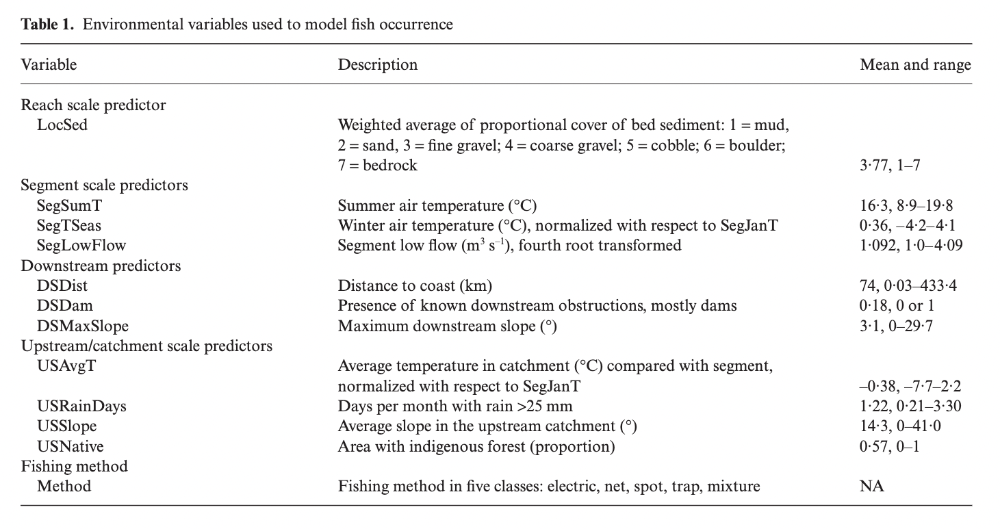
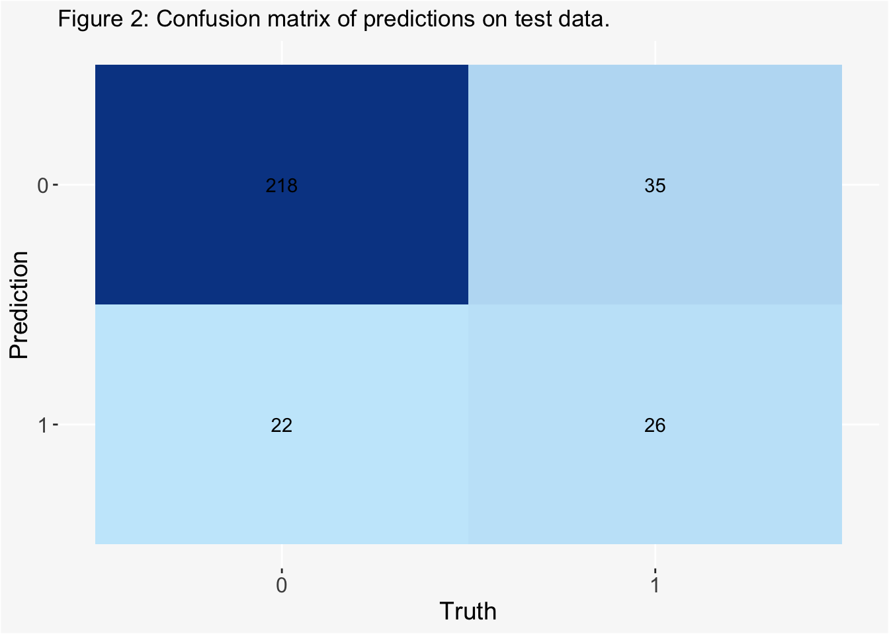

In this post, I perform a case study example of species distribution modeling in a reproduction of the work done by Edith et al. 2008 [1]. For this case study, we model the short-finned eel (Anguilla australis) species using Boosted Regression Trees. This analysis is derived from an assignment for EDS232: Machine Learning in Environmental Science, as part of the curriculum for UCSB’s Master’s of Environmental Data Science program.
Boosted regression trees, also known as gradient boosting machines, are machine learning techniques that combine concepts of regression trees (relating responses to predictors using recursive binary splits) and iterative boosting (an adaptive method for combining simple models to improve predictive performance). In this case study, decision trees are built sequentially using extreme gradient boosting to classify the presence or absence of short-finned eel in a given location with covariates including temperature, slope, rainy days, etc. The work provided by Edith et al. utilizes the {gbm} package in R, while this analysis follows a {tidymodels} approach in R.
Data
Our data for this analysis, “eel.model.data.csv” were retrived from the supplemental information of Edith et al. 2008. These data include the following variables:

Figure 1: Table 1. from Elith et al. 2008 displaying the variables included in the analysis.
code
# load required librarieslibrary(tidyverse)library(rsample)library(glmnet)library(tidymodels)library(ggplot2)library(sjPlot)library(pROC)library(RColorBrewer)eel_data <- eel_data_raw |> janitor::clean_names() # remove site number from modeling dataeel_model <- eel_data[,-1]# convert presence of angaus, downstream obstructions, and fishing methods to factorseel_model$angaus <-as.factor(eel_model$angaus)eel_model$ds_dam <-as.factor(eel_model$ds_dam)eel_model$method <-as.factor(eel_model$method)tab_df(eel_data[1:5,],title ="Table. 1")
Table. 1
site
angaus
seg_sum_t
seg_t_seas
seg_low_flow
ds_dist
ds_max_slope
us_avg_t
us_rain_days
us_slope
us_native
ds_dam
method
loc_sed
1
0
16.00
-0.10
1.04
50.20
0.57
0.09
2.47
9.80
0.81
0
electric
4.80
2
1
18.70
1.51
1.00
132.53
1.15
0.20
1.15
8.30
0.34
0
electric
2.00
3
0
18.30
0.37
1.00
107.44
0.57
0.49
0.85
0.40
0.00
0
spo
1.00
4
0
16.70
-3.80
1.00
166.82
1.72
0.90
0.21
0.40
0.22
1
electric
4.00
5
1
17.20
0.33
1.00
3.95
1.15
-1.20
1.98
21.90
0.96
0
electric
4.70
Split and Resample
We split the above data into a training and test set, stratifying by the outcome score (angaus) to maintain class balance, improve generalization, and ensure the reliability of evaluation in modeling performances. We then use a 10-fold cross validation to resample the training set, also stratified by outcome score.
code
# set a seed for reproducibilityset.seed(123)#stratified sampling with the {rsample} packageeel_split <-initial_split(data = eel_model, prop =0.7, strata = angaus)eel_train <-training(eel_split)eel_test <-testing(eel_split)# 10-fold cross validation, stratified by our outcome variable, angaus cv_folds <- eel_train |>vfold_cv(v=10, strata = angaus)
Preprocess
Next, we create a recipe to prepape the data for the XGBoost model. For this analysis, we are interested in predicting the binary outcome variable angaus, which indicates presence or absence of the eel species Anguilla australis.
code
# create a recipe boost_rec <-recipe(angaus ~., data = eel_train) |>step_normalize(all_numeric()) |>step_dummy(all_nominal(), -all_outcomes(), one_hot =TRUE) |>prep()# bake to check recipebaked_train <-bake(boost_rec, eel_train) baked_test <-bake(boost_rec, eel_test)
Tuning XGBoost
Tune Learning Rate
To begin, we perform tuning on just the learn_rate parameter.
We create a model specification using {xbgoost} for the estimation, specifying only the learn_rate parameter for tuning.
code
#create a model for specificationlearn_spec <-boost_tree(learn_rate =tune()) |>set_engine('xgboost') |>set_mode('classification')
Next, we build a grid to tune our model by using a range of learning rate parameter values.
code
#set a grid to tune hyperparameter valueslearn_grid <-expand.grid(learn_rate =seq(0.0001, 0.3, length.out =30))
Then, we define a new workflow and tune the model using the learning rate grid.
code
#define a new workflow learn_wf <-workflow() |>add_model(learn_spec) |>add_recipe(boost_rec)doParallel::registerDoParallel()set.seed(123)#tune the modellearn_tune <- learn_wf |>tune_grid(cv_folds, grid=learn_grid) #show the performance of the best models show_best(learn_tune, metric ='roc_auc') |>tab_df(title ='Table 2',digits =4,footnote ='Top performing models and their associated estimates for various learning rate parameter values.',show.footnote=TRUE)
Table 2
learn_rate
.metric
.estimator
mean
n
std_err
.config
0.2690
roc_auc
binary
0.8524
10
0.0143
Preprocessor1_Model27
0.1862
roc_auc
binary
0.8451
10
0.0086
Preprocessor1_Model19
0.2586
roc_auc
binary
0.8444
10
0.0120
Preprocessor1_Model26
0.2380
roc_auc
binary
0.8442
10
0.0128
Preprocessor1_Model24
0.1759
roc_auc
binary
0.8434
10
0.0129
Preprocessor1_Model18
Top performing models and their associated estimates for various learning rate parameter values.
code
#save the best model parameters to be used in future tuningbest_learnrate <-as.numeric(show_best(learn_tune, metric ='roc_auc')[1,1])
Tune Tree Parameters
Following the tuning of the learning rate parameter, we create a new specification with a set optimized learning rate from our previous optimization. Now, we shift our focus on tuning the tree parameters.
code
#create a new specificatin with set learning rate tree_spec <-boost_tree(learn_rate = best_learnrate,min_n =tune(),tree_depth =tune(),loss_reduction =tune(),trees =3000) |>set_mode('classification') |>set_engine('xgboost')
Again, we create a tuning grid, this time utilizing grid_max_entropy() to get a representative sampling of the parameter space.
code
#specify parameters for the tuning grid tree_params <- dials::parameters(min_n(),tree_depth(),loss_reduction())#set the tuning grid tree_grid <-grid_max_entropy(tree_params, size =20)#define a new workflow tree_wf <-workflow() |>add_model(tree_spec) |>add_recipe(boost_rec)set.seed(123)doParallel::registerDoParallel()#tune the modeltree_tuned <- tree_wf |>tune_grid(cv_folds, grid = tree_grid)#show the performance of the best models show_best(tree_tuned, metric ='roc_auc') |>tab_df(title ='Table 3',digits =4,footnote ='Top performing models and their associated estimates for various tree parameter values.',show.footnote =TRUE)
Table 3
min_n
tree_depth
loss_reduction
.metric
.estimator
mean
n
std_err
.config
3
4
0.0010
roc_auc
binary
0.8572
10
0.0154
Preprocessor1_Model12
6
11
0.0000
roc_auc
binary
0.8544
10
0.0150
Preprocessor1_Model10
4
2
0.0000
roc_auc
binary
0.8528
10
0.0143
Preprocessor1_Model14
7
9
4.9468
roc_auc
binary
0.8492
10
0.0130
Preprocessor1_Model04
4
15
0.0000
roc_auc
binary
0.8472
10
0.0141
Preprocessor1_Model11
Top performing models and their associated estimates for various tree parameter values.
code
#save the best model parameters to be used for future tuningbest_minn <-as.numeric(show_best(tree_tuned, metric ='roc_auc')[1,1])best_treedepth <-as.numeric(show_best(tree_tuned, metric ='roc_auc')[1,2])best_lossreduction <-as.numeric(show_best(tree_tuned, metric ='roc_auc')[1,3])
Tune Stochastic Parameters
We create one final specification, setting the learn rate and tree parameters to their optimal values defined in previous tuning iterations. Our final tuning is of the stochastic parameters.
code
#create a new specificatin with set learning rate and tree parametersstoch_tune <-boost_tree(learn_rate = best_learnrate,min_n = best_minn,tree_depth = best_treedepth,loss_reduction = best_lossreduction,trees =3000,mtry =tune(), sample_size =tune()) |>set_mode('classification') |>set_engine('xgboost')
We set up a tuning grid, again utilizing grid_max_entropy().
code
#set parameters for the tuning grid stoch_params <-parameters(finalize(mtry(), eel_train),sample_size =sample_prop())#set the tuning grid stoch_grid <-grid_max_entropy(stoch_params, size =20)#define a new workflow stoch_wf <-workflow() |>add_model(stoch_tune) |>add_recipe(boost_rec) set.seed(123)doParallel::registerDoParallel()#tune the model stoch_tuned <- stoch_wf |>tune_grid(cv_folds, grid = stoch_grid)#show the performance of the best models show_best(stoch_tuned, metric ='roc_auc') |>tab_df(title ='Table 4',digits =4,footnote ='Top performing models and their associated estimates for various stochiastic parameter values.',show.footnote =TRUE)
Table 4
mtry
sample_size
.metric
.estimator
mean
n
std_err
.config
3
0.9907
roc_auc
binary
0.8618
10
0.0136
Preprocessor1_Model04
8
0.9930
roc_auc
binary
0.8586
10
0.0129
Preprocessor1_Model19
8
0.7407
roc_auc
binary
0.8574
10
0.0151
Preprocessor1_Model18
2
0.8529
roc_auc
binary
0.8559
10
0.0128
Preprocessor1_Model10
10
0.8646
roc_auc
binary
0.8545
10
0.0137
Preprocessor1_Model06
Top performing models and their associated estimates for various stochiastic parameter values.
code
#save the best model parameters to be used for model finalizationbest_mtry <-as.numeric(show_best(stoch_tuned, metric ='roc_auc')[1,1])best_samplesize <-as.numeric(show_best(stoch_tuned, metric ='roc_auc')[1,2])
Now that we have tuned all of our relevant hyperparameters, we assemble a final workflow and do a final fit.
code
#create a final specification with all set optimized parameters final_model <-boost_tree(learn_rate = best_learnrate,min_n = best_minn,tree_depth = best_treedepth,loss_reduction = best_lossreduction,trees =3000,mtry = best_mtry, sample_size = best_samplesize) |>set_mode('classification') |>set_engine('xgboost') #define a final workflow final_wf <-workflow() |>add_model(final_model) |>add_recipe(boost_rec) #fit training data on final wffinal_fit <- final_wf |>fit(eel_train)final_eel_fit <-last_fit(final_model, angaus~., eel_split)final_pred <-as.data.frame(final_eel_fit$.predictions)tab_df(head(final_pred),title ='Table 5',digits =4,footnote ='Predictions of Angaus presence on test data.',show.footnote =TRUE)
Table 5
.pred_0
.pred_1
.row
.pred_class
angaus
.config
0.9999
0.0001
1
0
0
Preprocessor1_Model1
0.0085
0.9915
2
1
1
Preprocessor1_Model1
0.9810
0.0190
3
0
0
Preprocessor1_Model1
0.9468
0.0532
4
0
0
Preprocessor1_Model1
0.9995
0.0005
9
0
0
Preprocessor1_Model1
0.2945
0.7055
10
1
1
Preprocessor1_Model1
Predictions of Angaus presence on test data.
code
#bind predictions and original data eel_test_bind <-cbind(eel_test, final_eel_fit$.predictions)#remove duplicate columneel_test_bind <- eel_test_bind[,-1]#compute a confusion matrixconfusion_matrix <- eel_test_bind |> yardstick::conf_mat(truth = angaus, estimate = .pred_class)autoplot(confusion_matrix, type ="heatmap") +scale_fill_gradient(low ="#C7E9FB", high ="#084594") +theme(axis.text.x =element_text(size =12),axis.text.y =element_text(size =12),axis.title =element_text(size =14),panel.background =element_rect(fill ="#F8F8F8"),plot.background =element_rect(fill ="#F8F8F8")) +labs(title ="Figure 2: Confusion matrix of predictions on test data.")
Scale for fill is already present.
Adding another scale for fill, which will replace the existing scale.

code
# store accuracy metrics final_metrics <- final_eel_fit$.metricstab_df(final_metrics,title ='Table 6',digits =4,footnote ='Accuracy and Area Under the Receiver Operator Curve (ROC) of the final fit.',show.footnote =TRUE)
Table 6
.metric
.estimator
.estimate
.config
accuracy
binary
0.81063122923588
Preprocessor1_Model1
roc_auc
binary
0.819193989071038
Preprocessor1_Model1
Accuracy and Area Under the Receiver Operator Curve (ROC) of the final fit.
The final model has an accuracy of 0.80. The ROC area under the curve is 0.82.
Fit model evaluation data and compare performance
code
#read in evaluation data eval_data <-read_csv('eel.eval.data.csv', show_col_types =FALSE) |> janitor::clean_names() |>rename(angaus = angaus_obs)# convert presence of angaus, downstream obstructions, and fishing methods to factorseval_data$angaus <-as.factor(eval_data$angaus)eval_data$ds_dam <-as.factor(eval_data$ds_dam)eval_data$method <-as.factor(eval_data$method)#fit final model to big dataset#class predictionseval_classpred <- final_fit |>predict(eval_data)#probability predictionseval_probpred <- final_fit |>predict(eval_data, type ='prob')eval_df <-cbind(eval_classpred, eval_probpred, eval_data)#accuracy measureaccuracy <-accuracy(eval_df, truth = angaus, estimate = .pred_class)#roc_auc measure roc <-roc_auc(eval_df, truth = angaus, estimate = .pred_0)metrics <-rbind(accuracy, roc)tab_df(metrics, title ='Table 7',digits =4,footnote ='Accuracy and Area Under the Receiver Operator Curve (ROC) of the model fit to evaluation data.',show.footnote =TRUE)
Table 7
.metric
.estimator
.estimate
accuracy
binary
0.8200
roc_auc
binary
0.8476
Accuracy and Area Under the Receiver Operator Curve (ROC) of the model fit to evaluation data.
How does this model perform on the evaluation data?
The final model, fit to the evaluation data, has an accuracy of 0.82, and the ROC area under the curve is 0.85. For comparison, the model produced by Edith et al. had a ROC area under the curve of 0.858.
References
[1] Elith, J., Leathwick, J.R. and Hastie, T. (2008), A working guide to boosted regression trees. Journal of Animal Ecology, 77: 802-813. https://doi.org/10.1111/j.1365-2656.2008.01390.x
Source Code
---title: "Eel Species Distribution Modeling Using Boosted Trees"description: "A case study of species distribution modeling, following a modeling project described by Edith et al. 2008."author: - name: Gabrielle Smith url: https://gabriellensmith.github.io affiliation: MEDS affiliation-url: https://ucsb-meds.github.io/date: 2022-12-02catergories: [MEDS, Machine Learning, R]image: eel.jpegeditor: visualtoc: truedraft: falseformat: html: code-fold: true code-tools: true code-summary: 'code'---## Description: In this post, I perform a case study example of species distribution modeling in a reproduction of the work done by [Edith et al. 2008](https://besjournals.onlinelibrary.wiley.com/doi/10.1111/j.1365-2656.2008.01390.x)\[1\]. For this case study, we model the short-finned eel (*Anguilla australis*) species using Boosted Regression Trees. This analysis is derived from an assignment for EDS232: Machine Learning in Environmental Science, as part of the curriculum for UCSB's Master's of Environmental Data Science program.Boosted regression trees, also known as gradient boosting machines, are machine learning techniques that combine concepts of regression trees (relating responses to predictors using recursive binary splits) and iterative boosting (an adaptive method for combining simple models to improve predictive performance). In this case study, decision trees are built sequentially using extreme gradient boosting to classify the presence or absence of short-finned eel in a given location with covariates including temperature, slope, rainy days, etc. The work provided by Edith et al. utilizes the {gbm} package in R, while this analysis follows a {tidymodels} approach in R. ## Data Our data for this analysis, "eel.model.data.csv" were retrived from the supplemental information of Edith et al. 2008. These data include the following variables:```{r}#| include: falselibrary(readr)eel_data_raw <-read_csv("/Users/gabriellesmith/MEDS/EDS232/labs/eel.model.data.csv") ``````{r}#| warning: false# load required librarieslibrary(tidyverse)library(rsample)library(glmnet)library(tidymodels)library(ggplot2)library(sjPlot)library(pROC)library(RColorBrewer)eel_data <- eel_data_raw |> janitor::clean_names() # remove site number from modeling dataeel_model <- eel_data[,-1]# convert presence of angaus, downstream obstructions, and fishing methods to factorseel_model$angaus <-as.factor(eel_model$angaus)eel_model$ds_dam <-as.factor(eel_model$ds_dam)eel_model$method <-as.factor(eel_model$method)tab_df(eel_data[1:5,],title ="Table. 1")```## Split and ResampleWe split the above data into a training and test set, stratifying by the outcome score (angaus) to maintain class balance, improve generalization, and ensure the reliability of evaluation in modeling performances. We then use a 10-fold cross validation to resample the training set, also stratified by outcome score. ```{r}# set a seed for reproducibilityset.seed(123)#stratified sampling with the {rsample} packageeel_split <-initial_split(data = eel_model, prop =0.7, strata = angaus)eel_train <-training(eel_split)eel_test <-testing(eel_split)# 10-fold cross validation, stratified by our outcome variable, angaus cv_folds <- eel_train |>vfold_cv(v=10, strata = angaus)```## PreprocessNext, we create a recipe to prepape the data for the XGBoost model. For this analysis, we are interested in predicting the binary outcome variable angaus, which indicates presence or absence of the eel species Anguilla australis.```{r}# create a recipe boost_rec <-recipe(angaus ~., data = eel_train) |>step_normalize(all_numeric()) |>step_dummy(all_nominal(), -all_outcomes(), one_hot =TRUE) |>prep()# bake to check recipebaked_train <-bake(boost_rec, eel_train) baked_test <-bake(boost_rec, eel_test) ```## Tuning XGBoost### Tune Learning Rate To begin, we perform tuning on just the *learn_rate* parameter.We create a model specification using {xbgoost} for the estimation, specifying only the learn_rate parameter for tuning.```{r}#create a model for specificationlearn_spec <-boost_tree(learn_rate =tune()) |>set_engine('xgboost') |>set_mode('classification') ```Next, we build a grid to tune our model by using a range of learning rate parameter values.```{r}#set a grid to tune hyperparameter valueslearn_grid <-expand.grid(learn_rate =seq(0.0001, 0.3, length.out =30))```Then, we define a new workflow and tune the model using the learning rate grid.```{r}#define a new workflow learn_wf <-workflow() |>add_model(learn_spec) |>add_recipe(boost_rec)doParallel::registerDoParallel()set.seed(123)#tune the modellearn_tune <- learn_wf |>tune_grid(cv_folds, grid=learn_grid) #show the performance of the best models show_best(learn_tune, metric ='roc_auc') |>tab_df(title ='Table 2',digits =4,footnote ='Top performing models and their associated estimates for various learning rate parameter values.',show.footnote=TRUE)#save the best model parameters to be used in future tuningbest_learnrate <-as.numeric(show_best(learn_tune, metric ='roc_auc')[1,1])```## Tune Tree ParametersFollowing the tuning of the learning rate parameter, we create a new specification with a set optimized learning rate from our previous optimization. Now, we shift our focus on tuning the tree parameters.```{r}#create a new specificatin with set learning rate tree_spec <-boost_tree(learn_rate = best_learnrate,min_n =tune(),tree_depth =tune(),loss_reduction =tune(),trees =3000) |>set_mode('classification') |>set_engine('xgboost')```Again, we create a tuning grid, this time utilizing grid_max_entropy() to get a representative sampling of the parameter space. ```{r}#specify parameters for the tuning grid tree_params <- dials::parameters(min_n(),tree_depth(),loss_reduction())#set the tuning grid tree_grid <-grid_max_entropy(tree_params, size =20)#define a new workflow tree_wf <-workflow() |>add_model(tree_spec) |>add_recipe(boost_rec)set.seed(123)doParallel::registerDoParallel()#tune the modeltree_tuned <- tree_wf |>tune_grid(cv_folds, grid = tree_grid)#show the performance of the best models show_best(tree_tuned, metric ='roc_auc') |>tab_df(title ='Table 3',digits =4,footnote ='Top performing models and their associated estimates for various tree parameter values.',show.footnote =TRUE)#save the best model parameters to be used for future tuningbest_minn <-as.numeric(show_best(tree_tuned, metric ='roc_auc')[1,1])best_treedepth <-as.numeric(show_best(tree_tuned, metric ='roc_auc')[1,2])best_lossreduction <-as.numeric(show_best(tree_tuned, metric ='roc_auc')[1,3])```## Tune Stochastic ParametersWe create one final specification, setting the learn rate and tree parameters to their optimal values defined in previous tuning iterations. Our final tuning is of the stochastic parameters.```{r}#create a new specificatin with set learning rate and tree parametersstoch_tune <-boost_tree(learn_rate = best_learnrate,min_n = best_minn,tree_depth = best_treedepth,loss_reduction = best_lossreduction,trees =3000,mtry =tune(), sample_size =tune()) |>set_mode('classification') |>set_engine('xgboost')```We set up a tuning grid, again utilizing grid_max_entropy().```{r}#set parameters for the tuning grid stoch_params <-parameters(finalize(mtry(), eel_train),sample_size =sample_prop())#set the tuning grid stoch_grid <-grid_max_entropy(stoch_params, size =20)#define a new workflow stoch_wf <-workflow() |>add_model(stoch_tune) |>add_recipe(boost_rec) set.seed(123)doParallel::registerDoParallel()#tune the model stoch_tuned <- stoch_wf |>tune_grid(cv_folds, grid = stoch_grid)#show the performance of the best models show_best(stoch_tuned, metric ='roc_auc') |>tab_df(title ='Table 4',digits =4,footnote ='Top performing models and their associated estimates for various stochiastic parameter values.',show.footnote =TRUE)#save the best model parameters to be used for model finalizationbest_mtry <-as.numeric(show_best(stoch_tuned, metric ='roc_auc')[1,1])best_samplesize <-as.numeric(show_best(stoch_tuned, metric ='roc_auc')[1,2])```Now that we have tuned all of our relevant hyperparameters, we assemble a final workflow and do a final fit. ```{r}#create a final specification with all set optimized parameters final_model <-boost_tree(learn_rate = best_learnrate,min_n = best_minn,tree_depth = best_treedepth,loss_reduction = best_lossreduction,trees =3000,mtry = best_mtry, sample_size = best_samplesize) |>set_mode('classification') |>set_engine('xgboost') #define a final workflow final_wf <-workflow() |>add_model(final_model) |>add_recipe(boost_rec) #fit training data on final wffinal_fit <- final_wf |>fit(eel_train)final_eel_fit <-last_fit(final_model, angaus~., eel_split)final_pred <-as.data.frame(final_eel_fit$.predictions)tab_df(head(final_pred),title ='Table 5',digits =4,footnote ='Predictions of Angaus presence on test data.',show.footnote =TRUE)``````{r}#bind predictions and original data eel_test_bind <-cbind(eel_test, final_eel_fit$.predictions)#remove duplicate columneel_test_bind <- eel_test_bind[,-1]#compute a confusion matrixconfusion_matrix <- eel_test_bind |> yardstick::conf_mat(truth = angaus, estimate = .pred_class)autoplot(confusion_matrix, type ="heatmap") +scale_fill_gradient(low ="#C7E9FB", high ="#084594") +theme(axis.text.x =element_text(size =12),axis.text.y =element_text(size =12),axis.title =element_text(size =14),panel.background =element_rect(fill ="#F8F8F8"),plot.background =element_rect(fill ="#F8F8F8")) +labs(title ="Figure 2: Confusion matrix of predictions on test data.")``````{r}# store accuracy metrics final_metrics <- final_eel_fit$.metricstab_df(final_metrics,title ='Table 6',digits =4,footnote ='Accuracy and Area Under the Receiver Operator Curve (ROC) of the final fit.',show.footnote =TRUE)```The final model has an accuracy of 0.80. The ROC area under the curve is 0.82.## Fit model evaluation data and compare performance ```{r}#read in evaluation data eval_data <-read_csv('eel.eval.data.csv', show_col_types =FALSE) |> janitor::clean_names() |>rename(angaus = angaus_obs)# convert presence of angaus, downstream obstructions, and fishing methods to factorseval_data$angaus <-as.factor(eval_data$angaus)eval_data$ds_dam <-as.factor(eval_data$ds_dam)eval_data$method <-as.factor(eval_data$method)#fit final model to big dataset#class predictionseval_classpred <- final_fit |>predict(eval_data)#probability predictionseval_probpred <- final_fit |>predict(eval_data, type ='prob')eval_df <-cbind(eval_classpred, eval_probpred, eval_data)#accuracy measureaccuracy <-accuracy(eval_df, truth = angaus, estimate = .pred_class)#roc_auc measure roc <-roc_auc(eval_df, truth = angaus, estimate = .pred_0)metrics <-rbind(accuracy, roc)tab_df(metrics, title ='Table 7',digits =4,footnote ='Accuracy and Area Under the Receiver Operator Curve (ROC) of the model fit to evaluation data.',show.footnote =TRUE)```#### How does this model perform on the evaluation data?The final model, fit to the evaluation data, has an accuracy of 0.82, and the ROC area under the curve is 0.85. For comparison, the model produced by Edith et al. had a ROC area under the curve of 0.858. ## References \[1\] Elith, J., Leathwick, J.R. and Hastie, T. (2008), A working guide to boosted regression trees. Journal of Animal Ecology, 77: 802-813. https://doi.org/10.1111/j.1365-2656.2008.01390.x